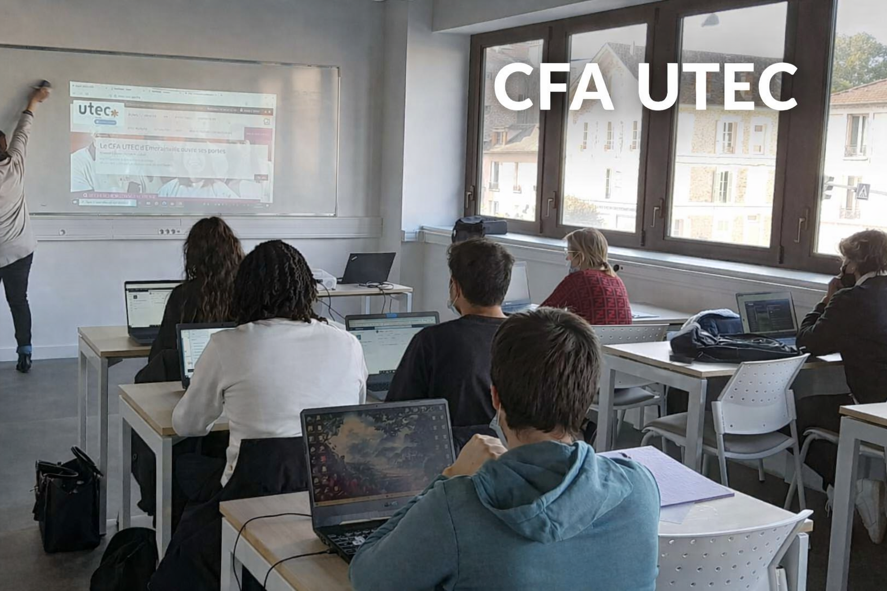

CFA UTEC
L'UTEC MELUN :
Le CFA UTEC propose différentes formations réparties en plusieurs pôles d’expertise, du CAP au Bac+5, notamment dans les domaines du numérique, de l’informatique, du commerce et de la gestion. Les formations, comme le BTS SIO, permettent d’acquérir des compétences en réseaux, support et cybersécurité.
Elles offrent plusieurs débouchés, notamment les métiers de technicien installation & maintenance systèmes et réseaux, administrateur sécurité des systèmes, expert IA & cybersécurité des SI ou manager et ingénieur des systèmes d’information.
Qu'est ce que le BTS SIO ?
Ma formation : BTS SIO
Le Brevet de Technicien Supérieur aux Services Informatiques aux Organisations (BTS SIO),
s'adresse à ceux qui souhaitent se former aux métiers de système et réseau ou de développeur informatique.
Cette formation a pour but d’intégrer le marché du travail ou poursuivre des études dans le domaine de l'informatique.
Deux options sont possibles dans le cadre de ce BTS :
Option SLAM
L’option Solutions logicielles et applications métiers forme des spécialistes des logiciels (rédaction d’un cahier des charges, formulation des besoins et spécifications, développement, intégration au sein de la société).
Les techniciens supérieurs en informatique option SLAM sont préparés aux métiers de :
- Développeur d’applications informatiques
- Développeur informatique
- Analyste d’applications ou d’études
- Analyste programmeur
- Programmeur analyste
- Programmeur d’applications
- Responsable des services applicatifs
- Technicien d’études informatiques
Ma spécialité : Option SISR
L’option Solution d’infrastructure, systèmes et réseaux forme des professionnels des réseaux et équipements informatiques (installation, maintenance, sécurité). En sortant d’un BTS SIO SISR, vous serez capables de gérer et d’administrer le réseau d’une société et d’assurer sa sécurité et sa maintenance.
Les techniciens supérieurs en informatique option SISR peuvent accéder aux métiers de :
- Administrateur systèmes et réseaux
- Technicien support et déploiement
- Pilote d’exploitation
- Support systèmes et réseaux
- Technicien d’infrastructure
- Technicien de production
- Technicien micro et réseaux
Emplacement & Contact
UTEC Melun
Adresse :
1 Rue du Port de Valvins, 77215 Avon
Téléphone :
01 60 37 28 40
Horaires :
Du lundi au jeudi : 8h30 / 12h30 - 13h30 / 17h
Le vendredi : 8h30 / 12h30 - 13h30 / 16h